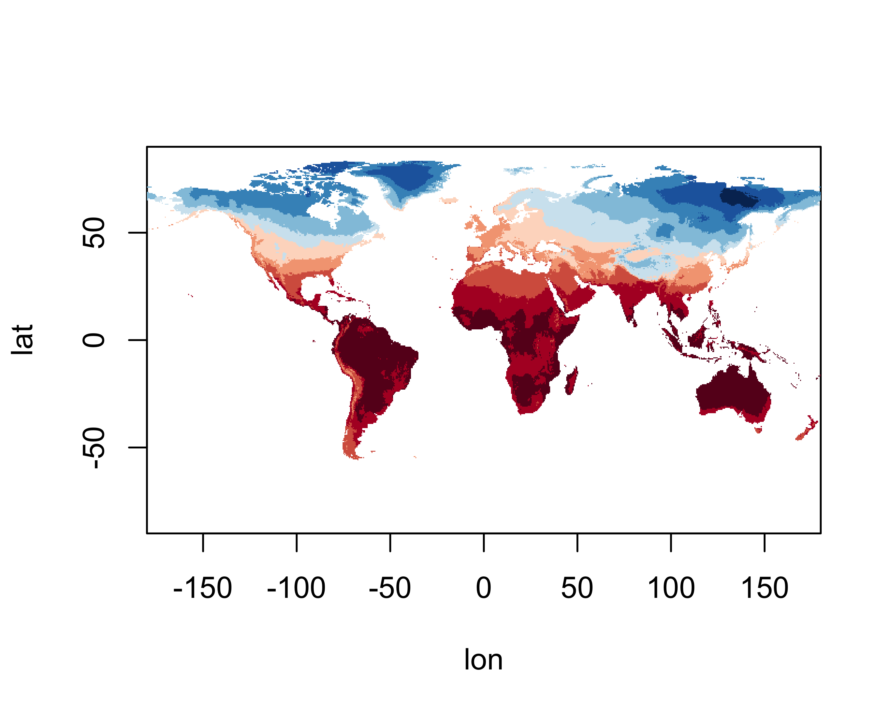
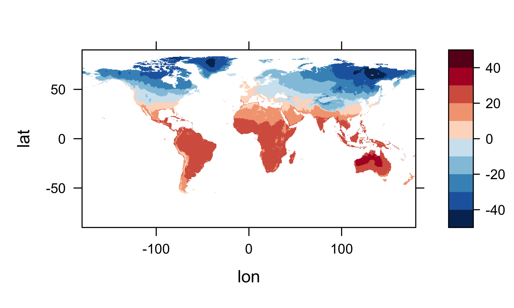
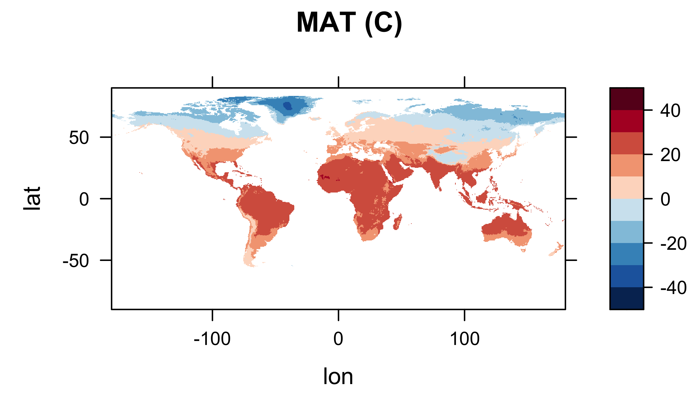
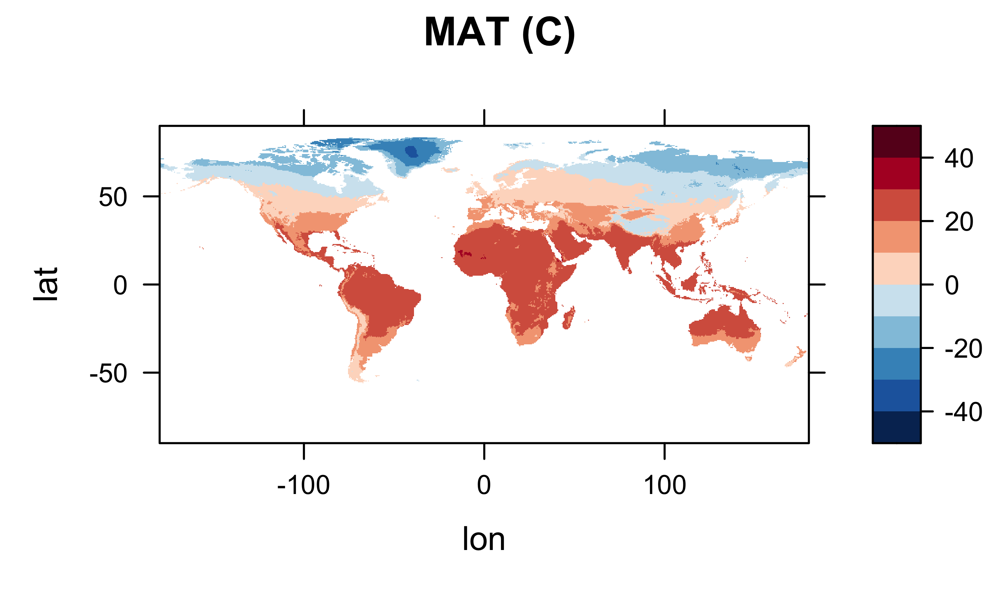
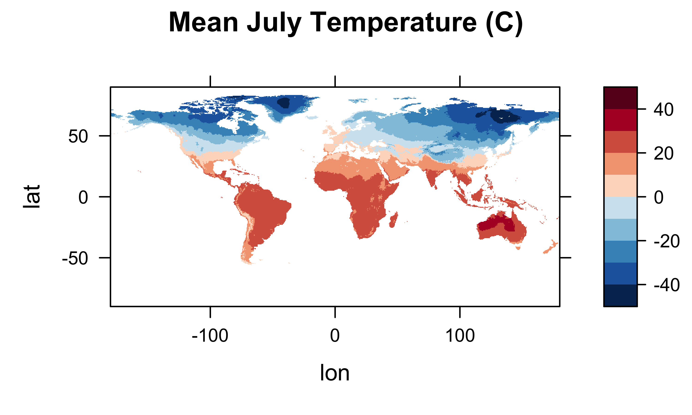
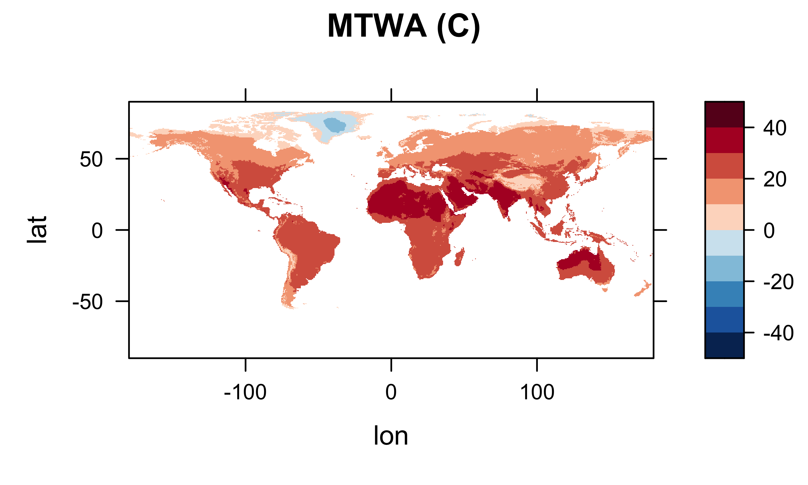
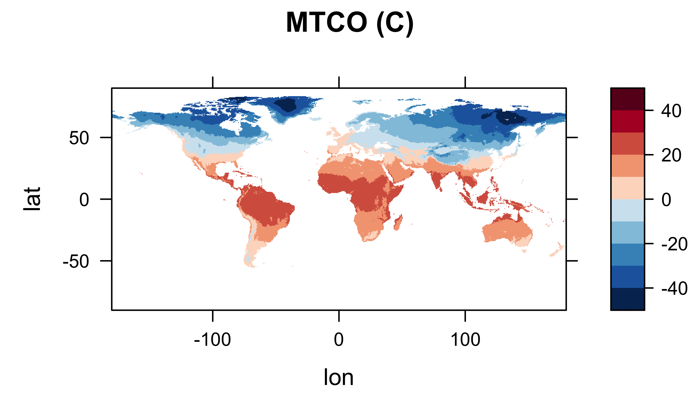
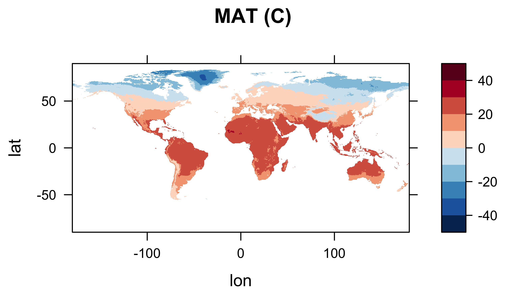
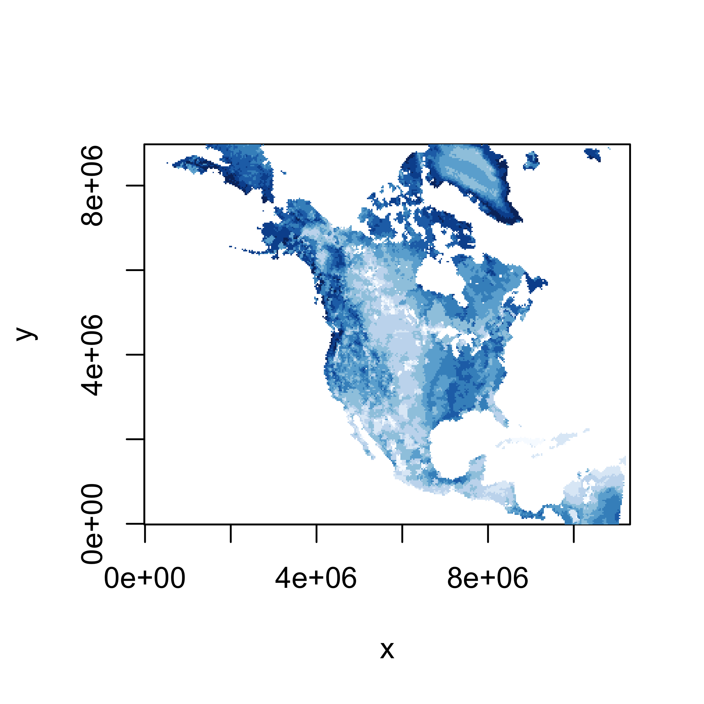
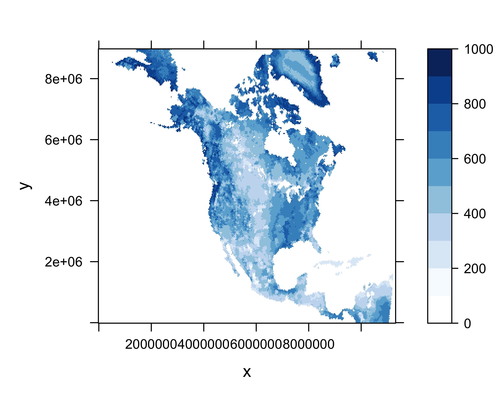

netCDF in R
- 1 Introduction
- 2 Reading a netCDF data set using the ncdf4 package
- 3 Reshaping from raster to rectangular
- 4 Data frame-to-array conversion(rectangular to raster)
- 5 Create and write a netCDF file
- 6 Reading and writing a projected netCDF file
- 7 Map the data
- 8 Create and write a projected netCDF file
1 Introduction
NetCDF is a widely used format for exchanging or distributing climate data, and has also been adopted in other fields, particularly in bioinformatics, and in other disciplines where large multidimensional arrays of data are generated. NetCDF files are self-describing, in the sense that they contain metadata that describes what is contained in a file, such as the latitude and longitude layout of the grid, the names and units of variables in the data set, and “attributes” that describe things like missing value codes, or offsets and scale factors that may have been used to compress the data. NetCDF files are also machine-independent because can be transferred among servers and computers that are running different operating systems, without having to convert the files in some way. Originally developed for storing and distributing climate data, such as those generated by climate simulation or reanalysis models, the format and protocols can be used for other gridded data sets. NetCDF libraries are developed and maintained by Unidata http://www.unidata.ucar.edu/software/netcdf/ and easy-to-use applications for producing simple visualizations of NetCDF files exist, such as Panoply, http://www.giss.nasa.gov/tools/panoply/.
There are two versions of netCDF; netCDF3, which is widely used, but has some size and performance limitations, and netCDF4, which supports larger data sets and includes additional capabilities like file compression.
R has the capability of reading and writing (and hence analyzing) netCDF files, using the ncdf and ncdf4 packages provided by David Pierce, and through other packages like raster, metR1, and RNetCDF. The ncdf4.helpers and easyNCDF packages provide some additional tools.
The ncdf4 package is available on both Windows and Mac OS X (and Linux), and supports both the older NetCDF3 format as well as netCDF4. (See the ncdf/ncdf4 web page at http://cirrus.ucsd.edu/~pierce/ncdf/index.html for further discussion.)
1.1 Reading, restructuring and writing netCDF files in R
There is a common “design pattern” in analyzing data stored as netCDF, HDF or in the native format of the raster package, that includes
- data input (using, for example,
ncdf4,rhdf5raster); - recasting/reshaping the raster brick input data into a rectangular data frame;
- analysis and visualization;
- recasting/reshaping a “results” data frame back to a raster or raster brick; and
- data output, using the same packages as in step 1.
The examples provided here include
- reading a netCDF file using the ncdf4 package (netCDF4)
- reshaping a netCDF “brick” of data into a data frame
- reshaping a data frame into an array or “brick”
- writing a netCDF file using the ncdf4 package
The examples make use of a netCDF file of climate data from the Climate Research Unit http://www.cru.uea.ac.uk/data, consisting of long-term mean values (1961-1990) of near-surface air temperature on a 0.5-degree grid (for land points). The dimensions of the array are 720 (longitudes) x 360 (latitudes) x 12 (months), thus forming a raster “stack” or “brick” consisting of 12 layers.
The data are available on ClimateLab.uoregon.edu (see File transfer on the Tasks tab), in the /nc_files folder, with the file name cru10min30_tmp.nc. Download the netCDF file to a convenient folder.
2 Reading a netCDF data set using the ncdf4 package
To begin, load the ncdf4 package.
The file is assumed to be a CF-compliant netCDF file, in which the three main spatiotemporal dimensions allear the the relative order of time (T-coordinate), height or depth (Z-coordinate), latitude (or Y-coordinate), and longitude (or X-coordinate). In this example, the file is a 3-D file with T, Y and X coordinates (month of the year, latitude, and longitude). First, set the values for some temporary variables. ncpath is the path to where the file was downloaded, ncname is the name of the netCDF file, while dname is the name of the variable that will be read in.
2.1 Open the netCDF file
# set path and filename
ncpath <- "/Users/bartlein/Projects/ESSD/data/nc_files/"
ncname <- "cru10min30_tmp"
ncfname <- paste(ncpath, ncname, ".nc", sep="")
dname <- "tmp" # note: tmp means temperature (not temporary)Open the NetCDF data set, and print some basic information. The print() function applied to the ncin object produces information similar to that produced by the command-line utility ncdump.
## File /Users/bartlein/Projects/ESSD/data/nc_files/cru10min30_tmp.nc (NC_FORMAT_CLASSIC):
##
## 2 variables (excluding dimension variables):
## float time_bounds[nv,time]
## float tmp[lon,lat,time]
## long_name: air_temperature
## units: degC
## _FillValue: -99
## source: E:\Projects\cru\data\cru_cl_2.0\nc_files\cru10min_tmp.nc
##
## 4 dimensions:
## lon Size:720
## standard_name: longitude
## long_name: longitude
## units: degrees_east
## axis: X
## lat Size:360
## standard_name: latitude
## long_name: latitude
## units: degrees_north
## axis: Y
## time Size:12
## standard_name: time
## long_name: time
## units: days since 1900-01-01 00:00:00.0 -0:00
## axis: T
## calendar: standard
## climatology: climatology_bounds
## nv Size:2
##
## 7 global attributes:
## data: CRU CL 2.0 1961-1990 Monthly Averages
## title: CRU CL 2.0 -- 10min grid sampled every 0.5 degree
## institution: http://www.cru.uea.ac.uk/
## source: http://www.cru.uea.ac.uk/~markn/cru05/cru05_intro.html
## references: New et al. (2002) Climate Res 21:1-25
## history: Wed Oct 29 11:27:35 2014: ncrename -v climatology_bounds,time_bounds cru10min30_tmp.nc
## P.J. Bartlein, 19 Jun 2005
## Conventions: CF-1.0Note that in an ncdump of the file, the coordinates of the variable tmp are listed in the reverse order as they are here (e.g. tmp(time, lat, lon)).
2.2 Get coordinate (including time) variables
Next, get the coordinate variables longitude and latitude are read using the ncvar_get() function, and the first few values of each are listed using the head() and tail() functions. The number of longitude and latitude values can be verified using the dim() function:
## [1] -179.75 -179.25 -178.75 -178.25 -177.75 -177.25## [1] -89.75 -89.25 -88.75 -88.25 -87.75 -87.25## [1] 720 360Get the time variable and its attributes using the ncvar_get() and ncatt_get() functions, and list them, and also get the number of time steps using the dim() function.
## [1] 27773.5 27803.5 27833.5 27864.0 27894.5 27925.0 27955.5 27986.5 28017.0 28047.5 28078.0 28108.5## [1] 12Print the time units string. Note the structure of the time units attribute. The object tunits has two components hasatt (a logical variable), and tunits$value, the actual “time since” string.
## $hasatt
## [1] TRUE
##
## $value
## [1] "days since 1900-01-01 00:00:00.0 -0:00"2.3 Get a variable
Get the the variable (tmp) and its attributes, and verify the size of the array.
# get temperature
tmp_array <- ncvar_get(ncin,dname)
dlname <- ncatt_get(ncin,dname,"long_name")
dunits <- ncatt_get(ncin,dname,"units")
fillvalue <- ncatt_get(ncin,dname,"_FillValue")
dim(tmp_array)## [1] 720 360 12Get the global attributes. The attributes can be listed, by simply typing an attribute name at the command line.
# get global attributes
title <- ncatt_get(ncin,0,"title")
institution <- ncatt_get(ncin,0,"institution")
datasource <- ncatt_get(ncin,0,"source")
references <- ncatt_get(ncin,0,"references")
history <- ncatt_get(ncin,0,"history")
Conventions <- ncatt_get(ncin,0,"Conventions")Close the netCDF file using the nc_close() function.
Check what’s in the current workspace:
## [1] "Conventions" "datasource" "dlname" "dname" "dunits" "fillvalue" "history"
## [8] "institution" "lat" "lon" "ncfname" "ncin" "ncname" "ncpath"
## [15] "nlat" "nlon" "nt" "references" "time" "title" "tmp_array"
## [22] "tunits"3 Reshaping from raster to rectangular
NetCDF files or data sets are naturally 2-D raster slabs (e.g. longitude by latitude “slices”), 3-D bricks (e.g. longitude by latitude by time), or 4-D arrays (e.g. longitude by latitude by height by time), while most data analysis routines in R expect 2-D variable-by-observation “tidy” data frames. (There is an exception to this expectation in some cases like principle components analysis (PCA) in which variables are locations and the observations are times.) Therefore, before analysis, a 3-D or 4-D array in the netCDF files must be “flattened” into a 2-D array. In addition, time is usually stored as the CF (Climate Forecast) “time since” format that is not usually human-readable. Here are some example conversions:
Load some necessary packages (install them if necessary)
3.1 Convert the time variable
The time variable, in “time-since” units can be converted into “real” (or more easily readable) time values by splitting the time tunits$value string into its component parts, and then using the chron() function to determine the absolute value of each time value from the time origin.
# convert time -- split the time units string into fields
tustr <- strsplit(tunits$value, " ")
tdstr <- strsplit(unlist(tustr)[3], "-")
tmonth <- as.integer(unlist(tdstr)[2])
tday <- as.integer(unlist(tdstr)[3])
tyear <- as.integer(unlist(tdstr)[1])
chron(time,origin=c(tmonth, tday, tyear))## [1] (01/16/76 12:00:00) (02/15/76 12:00:00) (03/16/76 12:00:00) (04/16/76 00:00:00) (05/16/76 12:00:00)
## [6] (06/16/76 00:00:00) (07/16/76 12:00:00) (08/16/76 12:00:00) (09/16/76 00:00:00) (10/16/76 12:00:00)
## [11] (11/16/76 00:00:00) (12/16/76 12:00:00)The “time-stamp” for this particular data set, which represents long-term means over the interal 1961-1990 is the mid-point of the interval for each month of the year, i.e. the middle of January, in the middle of the range of years (e.g. 1976). This is somewhat arbitrary, and despite there being a convention for representing “climatological statistics” there are other ways in which the “time” associated with a long-term mean is represented.
3.2 Replace netCDF fillvalues with R NAs
In a netCDF file, values of a variable that are either missing or simply not available (i.e. ocean grid points in a terrestrial data set) are flagged using specific “fill values” (_FillValue) or missing values (missing_value), the particular values of which are set as attributes of a variable. In R, such unavailable data are indicated using the “NA” value. The following code fragment illustrates how to replace the netCDF variable’s fill values with R NA’s .
The head() function can be used before and after executing the “square bracket” selection and replacement to verify that the NA values have indeed replace the netCDF fill values(head(as.vector(temp_array[,,1])). The total number of non-missing (i.e. land, except for Antarctica, which is not present in the data set) grid cells can be gotten by determining the length of a vector of values representing one slice from the brick, omitting the NA values:
## [1] 629613.3 Get a single time slice of the data, create an R data frame, and write a .csv file
NetCDF variables are read and written as one-dimensional vectors (e.g. longitudes), two-dimensional arrays or matrices (raster “slices”), or multi-dimensional arrays (raster “bricks”). In such data structures, the coordinate values for each grid point are implicit, inferred from the marginal values of, for example, longitude, latitude and time. In contrast, in R, the principal data structure for a variable is the data frame. In the kinds of data sets usually stored as netCDF files, each row in the data frame will contain the data for an individual grid point, with each column representing a particular variable, including explicit values for longitude and latitude (and perhaps time). In the example CRU data set considered here, the variables would consist of longitude, latitude and 12 columns of long-term means for each month, with the full data set thus consisting of 259200 rows (720 by 360) and 14 columns.
This particular structure of this data set can be illustrated by selecting a single slice from the temperature “brick”, turning it into a data frame with three variables and 720 by 360 rows, and writing it out as a .csv file.
3.3.1 Get a single slice of data
The dimensions of tmp_slice, e.g. 720, 360, can be verified using the dim() function.
A quick look (map) of the extracted slice of data can be gotten using the image() function.

A better map can be obtained using the levelplot() function from the lattice package. The expand.grid() function is used to create a set of 720 by 360 pairs of latitude and longitude values (with latitudes varying most rapidly), one for each element in the tmp_slice array. Specific values of the cutpoints of temperature categories are defined to cover the range of temperature values here.
# levelplot of the slice
grid <- expand.grid(lon=lon, lat=lat)
cutpts <- c(-50,-40,-30,-20,-10,0,10,20,30,40,50)
levelplot(tmp_slice ~ lon * lat, data=grid, at=cutpts, cuts=11, pretty=T,
col.regions=(rev(brewer.pal(10,"RdBu"))))
3.3.2 Create a data frame
To create a data frame, the expand.grid() and as.matrix() functions are used to create the 259200 pairs (i.e. rows) of values of longitude and latitude (the columns), and the as.vector() function is used to “unstack” the slice of data into a long vector. The size of the objects that are created can be verified using the dim() and length() functions.
# create dataframe -- reshape data
# matrix (nlon*nlat rows by 2 cols) of lons and lats
lonlat <- as.matrix(expand.grid(lon,lat))
dim(lonlat)## [1] 259200 2## [1] 259200The data.frame() and cbind() functions are used to assemble the columns of the data frame, which are assigned appropriate names using the names() function (on the left-hand side of assignment operator). The head() function, applied on top of the na.omit() function lists the first rows of values without NAs:
# create dataframe and add names
tmp_df01 <- data.frame(cbind(lonlat,tmp_vec))
names(tmp_df01) <- c("lon","lat",paste(dname,as.character(m), sep="_"))
head(na.omit(tmp_df01), 10)## lon lat tmp_1
## 49186 -67.25 -55.75 8.2
## 49901 -69.75 -55.25 7.9
## 49902 -69.25 -55.25 8.4
## 49903 -68.75 -55.25 7.8
## 49904 -68.25 -55.25 8.9
## 49905 -67.75 -55.25 9.1
## 49906 -67.25 -55.25 9.0
## 50617 -71.75 -54.75 8.8
## 50619 -70.75 -54.75 8.7
## 50620 -70.25 -54.75 7.93.3.3 Write out the data frame
Finally the data frame is written out to the working directory as a .csv file, using na.omit() again to drop the observations with missing data (i.e. ocean points and Antarctica).
3.4 Convert the whole array to a data frame, and calculate MTWA, MTCO and the annual mean
The idea here is to convert the nlon by nlat by nt 3-D array into a (nlon x nlat) by nt 2-D matrix. (This will work if the netCDF data set was written as a CF-compliant data set, with arrays dimensioned as in Fortran, i.e. as nlon x nlat x nt arrays).
3.4.1 Reshape the whole array
Convert the array to a vector. First, create a long vector tmp_vec_long using the as.vector() reshaping function, and verify its length, which should be 3110400. (This will work only if the netCDF file (and hence the data array) follow the “CF” conventions, i.e. that the variable tmp has been defined to have dimensions nlon by nlat by nt, in that order.)
## [1] 3110400Then reshape that vector into a 259200 by 12 matrix using the matrix() function, and verify its dimensions, which should be 259200 by 12.
# reshape the vector into a matrix
tmp_mat <- matrix(tmp_vec_long, nrow=nlon*nlat, ncol=nt)
dim(tmp_mat)## [1] 259200 12## [,1] [,2] [,3] [,4] [,5] [,6] [,7] [,8] [,9] [,10] [,11] [,12]
## [1,] 8.2 8.2 6.9 5.2 3.1 1.7 1.1 1.8 3.1 4.9 6.3 7.5
## [2,] 7.9 7.8 6.7 5.1 3.2 1.9 1.4 1.9 3.2 4.8 6.1 7.3
## [3,] 8.4 8.3 7.2 5.5 3.5 2.1 1.7 2.2 3.6 5.3 6.6 7.8
## [4,] 7.8 7.7 6.5 4.8 2.6 1.2 0.8 1.5 3.0 4.7 6.0 7.2
## [5,] 8.9 8.8 7.5 5.7 3.3 1.8 1.5 2.2 3.9 5.7 7.1 8.3
## [6,] 9.1 9.0 7.5 5.7 3.3 1.8 1.3 2.2 3.8 5.7 7.2 8.4Create the second data frame from the tmp_mat matrix.
# create a dataframe
lonlat <- as.matrix(expand.grid(lon,lat))
tmp_df02 <- data.frame(cbind(lonlat,tmp_mat))
names(tmp_df02) <- c("lon","lat","tmpJan","tmpFeb","tmpMar","tmpApr","tmpMay","tmpJun",
"tmpJul","tmpAug","tmpSep","tmpOct","tmpNov","tmpDec")
# options(width=96)
head(na.omit(tmp_df02, 20))## lon lat tmpJan tmpFeb tmpMar tmpApr tmpMay tmpJun tmpJul tmpAug tmpSep tmpOct tmpNov tmpDec
## 49186 -67.25 -55.75 8.2 8.2 6.9 5.2 3.1 1.7 1.1 1.8 3.1 4.9 6.3 7.5
## 49901 -69.75 -55.25 7.9 7.8 6.7 5.1 3.2 1.9 1.4 1.9 3.2 4.8 6.1 7.3
## 49902 -69.25 -55.25 8.4 8.3 7.2 5.5 3.5 2.1 1.7 2.2 3.6 5.3 6.6 7.8
## 49903 -68.75 -55.25 7.8 7.7 6.5 4.8 2.6 1.2 0.8 1.5 3.0 4.7 6.0 7.2
## 49904 -68.25 -55.25 8.9 8.8 7.5 5.7 3.3 1.8 1.5 2.2 3.9 5.7 7.1 8.3
## 49905 -67.75 -55.25 9.1 9.0 7.5 5.7 3.3 1.8 1.3 2.2 3.8 5.7 7.2 8.43.4.2 Get the annual mean
Get the annual mean, mtwa and mtco (mean temperatures of the warmest and coldest montth) values and add them to the second data frame.
# get the annual mean and MTWA and MTCO
tmp_df02$mtwa <- apply(tmp_df02[3:14],1,max) # mtwa
tmp_df02$mtco <- apply(tmp_df02[3:14],1,min) # mtco
tmp_df02$mat <- apply(tmp_df02[3:14],1,mean) # annual (i.e. row) means
head(na.omit(tmp_df02))## lon lat tmpJan tmpFeb tmpMar tmpApr tmpMay tmpJun tmpJul tmpAug tmpSep tmpOct tmpNov tmpDec
## 49186 -67.25 -55.75 8.2 8.2 6.9 5.2 3.1 1.7 1.1 1.8 3.1 4.9 6.3 7.5
## 49901 -69.75 -55.25 7.9 7.8 6.7 5.1 3.2 1.9 1.4 1.9 3.2 4.8 6.1 7.3
## 49902 -69.25 -55.25 8.4 8.3 7.2 5.5 3.5 2.1 1.7 2.2 3.6 5.3 6.6 7.8
## 49903 -68.75 -55.25 7.8 7.7 6.5 4.8 2.6 1.2 0.8 1.5 3.0 4.7 6.0 7.2
## 49904 -68.25 -55.25 8.9 8.8 7.5 5.7 3.3 1.8 1.5 2.2 3.9 5.7 7.1 8.3
## 49905 -67.75 -55.25 9.1 9.0 7.5 5.7 3.3 1.8 1.3 2.2 3.8 5.7 7.2 8.4
## mtwa mtco mat
## 49186 8.2 1.1 4.833333
## 49901 7.9 1.4 4.775000
## 49902 8.4 1.7 5.183333
## 49903 7.8 0.8 4.483333
## 49904 8.9 1.5 5.391667
## 49905 9.1 1.3 5.416667## [1] 62961 173.4.3 Write out the second data frame
Write the second data frame out as a .csv file, dropping NAs.
# write out the dataframe as a .csv file
csvpath <- "/Users/bartlein/Projects/ESSD/data/csv_files/"
csvname <- "cru_tmp_2.csv"
csvfile <- paste(csvpath, csvname, sep="")
write.table(na.omit(tmp_df02),csvfile, row.names=FALSE, sep=",")Create a third data frame, with only non-missing values. This will be used later to demonstrate how to convert a “short” data frame into full matrix or array for writing out as a netCDF file.
## lon lat tmpJan tmpFeb tmpMar tmpApr tmpMay tmpJun tmpJul tmpAug tmpSep tmpOct tmpNov tmpDec
## 49186 -67.25 -55.75 8.2 8.2 6.9 5.2 3.1 1.7 1.1 1.8 3.1 4.9 6.3 7.5
## 49901 -69.75 -55.25 7.9 7.8 6.7 5.1 3.2 1.9 1.4 1.9 3.2 4.8 6.1 7.3
## 49902 -69.25 -55.25 8.4 8.3 7.2 5.5 3.5 2.1 1.7 2.2 3.6 5.3 6.6 7.8
## 49903 -68.75 -55.25 7.8 7.7 6.5 4.8 2.6 1.2 0.8 1.5 3.0 4.7 6.0 7.2
## 49904 -68.25 -55.25 8.9 8.8 7.5 5.7 3.3 1.8 1.5 2.2 3.9 5.7 7.1 8.3
## 49905 -67.75 -55.25 9.1 9.0 7.5 5.7 3.3 1.8 1.3 2.2 3.8 5.7 7.2 8.4
## mtwa mtco mat
## 49186 8.2 1.1 4.833333
## 49901 7.9 1.4 4.775000
## 49902 8.4 1.7 5.183333
## 49903 7.8 0.8 4.483333
## 49904 8.9 1.5 5.391667
## 49905 9.1 1.3 5.416667Check what’s in the current workspace now:
## [1] "Conventions" "csvfile" "csvname" "csvpath" "cutpts" "datasource"
## [7] "dlname" "dname" "dunits" "fillvalue" "grid" "history"
## [13] "institution" "lat" "lon" "lonlat" "m" "ncfname"
## [19] "ncin" "ncname" "ncpath" "nlat" "nlon" "nt"
## [25] "outworkspace" "references" "tday" "tdstr" "time" "title"
## [31] "tmonth" "tmp_array" "tmp_df01" "tmp_df02" "tmp_df03" "tmp_mat"
## [37] "tmp_slice" "tmp_vec" "tmp_vec_long" "tunits" "tustr" "tyear"4 Data frame-to-array conversion(rectangular to raster)
In this set of example code, an R data frame is reshaped into an array that can be written out as a netCDF file. This could be a trivial transformation, if all rows and columns of the target array are contained in the data frame. In many real-world cases, however, the data frame contains, for example, only land data points, and so transforming or reshaping the data frame to an array is not straighforward, because the data frame contains only a subset of points in the full array.
There are several approaches for doing the reshaping, ranging from explict and slow, to rather cryptic, but fast. The individual approaches below can be timed using the proc.time() function:
# time an R process
ptm <- proc.time() # start the timer
# ... some code ...
proc.time() - ptm # how long?Specific times will vary, of course, from machine to machine.
4.1 Convert a “full” R data frame to an array
In this first example, a “full” data frame (e.g. one with nlon x nlat rows, and nt columns) is reshaped into a 3-D nlon`* by nlat by nt array. (The example also illustrates the conversion of a nlon x nlat rows by 1-column variable in a data frame into a 2-D nlon by nlat array.)
4.1.1 Initial set up – create dimension variables
The first step is to create the dimension variables for the “full” array; in this example, the longitudes (lon), latitudes (lat) and time (t) variables. These variables should be defined for the “full” array, and not just for the observations in the data frame. One approach is to simply copy those values from an “original” netCDF data set.
# copy lon, lat and time from the initial netCDF data set
lon2 <- lon
lat2 <- lat
time2 <- time
tunits2 <- tunits
nlon2 <- nlon; nlat2 <- nlat; nt2 <- ntAnother approach is to generate or specify the dimension variables explicitly. However, this may be problematical if the source file longitudes and latitudes were not generated in exactly the same way, or were saved at lower (single) precision.
# generate lons, lats and set time
lon2 <- as.array(seq(-179.75,179.75,0.5))
nlon2 <- 720
lat2 <- as.array(seq(-89.75,89.75,0.5))
nlat2 <- 360
time2 <-as.array(c(27773.5, 27803.5, 27833.5, 27864.0, 27894.5, 27925.0,
27955.5, 27986.5, 28017.0, 28047.5, 28078.0, 28108.5))
nt2 <- 12
tunits2 <- "days since 1900-01-01 00:00:00.0 -0:00"4.1.2 Reshaping a “full” data frame to an array
In this example, the tmp_df02 data frame, which contains 259200 rows and 17 columns (with missing values over the oceans), is transformed into a nlon by nlat by nt array. In the new array, lon varies most rapidly, lat next, and t least rapidly, in a fashion consistent with the “CF-1.6” conventions for netCDF files. The size (and shapes) of the various arrays are confirmed by repeated applications of the dim() function (recalling that dim() will list the number of columns first, number of rows second (and if approriate, the number of times third)). The conversion is done in two steps: 1) converting that part of the the data frame containing the 12 monthly values into into a 2-d matrix, and then 2) reshaping the 2-d matrix into a 3-d array.
ptm <- proc.time() # start the timer
# convert tmp_df02 back into an array
tmp_mat2 <- as.matrix(tmp_df02[3:(3+nt-1)])
dim(tmp_mat2)## [1] 259200 12## [1] 720 360 12The columns containing mtwa, mtco and mat are each transformed into 2-D arrays.
# convert mtwa, mtco and mat to arrays
mtwa_array2 <- array(tmp_df02$mtwa, dim=c(nlon2,nlat2))
dim(mtwa_array2)## [1] 720 360## [1] 720 360## [1] 720 360## user system elapsed
## 0.104 0.044 0.1584.1.3 Check the conversion
It’s generally a good idea to plot (map) the resulting arrays to check for anomalies or misapprehensions about the layout of the data. First plot the January values, then MTWA, MTCO and MAT.
# some plots to check creation of arrays
library(lattice)
library(RColorBrewer)
levelplot(tmp_array2[,,1] ~ lon * lat, data=grid, at=cutpts, cuts=11, pretty=T,
col.regions=(rev(brewer.pal(10,"RdBu"))), main="Mean July Temperature (C)")
levelplot(mtwa_array2 ~ lon * lat, data=grid, at=cutpts, cuts=11, pretty=T,
col.regions=(rev(brewer.pal(10,"RdBu"))), main="MTWA (C)")
levelplot(mtco_array2 ~ lon * lat, data=grid, at=cutpts, cuts=11, pretty=T,
col.regions=(rev(brewer.pal(10,"RdBu"))), main="MTCO (C)")
levelplot(mat_array2 ~ lon * lat, data=grid, at=cutpts, cuts=11, pretty=T,
col.regions=(rev(brewer.pal(10,"RdBu"))), main="MAT (C)")

 

Looks ok.
4.2 Convert a “short” R data frame to an array
In this second example, a “short” data frame, containing, for example, data only for land grid points, is converted to a “full” array. Unlike the conversion of a “full” data frame, this can’t be accomplished by simple conversion and reshaping, but instead the rows in the “short” data frame have to be assigned to the specific locations. This can be done explicity, by looping over the individual rows of the data frame, and copying the values from each row into the appropriate locations of the array. This can be very slow, but it has the advantage of being explict. “Loop-avoidance” approaches are much faster, but can be rather cryptic, and depend on the data frame and “target” arrays being properly structured. In this example, the “short” data frame tmp_df03 is moved into a 3-D array tmp_array3 using three different approaches.
4.2.1 Initial set up
As before, dimension variables are generated or copied:
# generate lons, lats and set time
lon3 <- as.array(seq(-179.750,179.750,0.50))
nlon3 <- 720
lat3 <- as.array(seq(-89.750,89.750,0.50))
nlat3 <- 360
time3 <- as.array(c(27773.5, 27803.5, 27833.5, 27864.0, 27894.5, 27925.0,
27955.5, 27986.5, 28017.0, 28047.5, 28078.0, 28108.5))
nt3 <- 12
tunits3 <- "days since 1900-01-01 00:00:00.0 -0:00"# copy lon, lat and time from initial netCDF data set
lon4 <- lon
lat4 <- lat
time4 <- time
tunits4 <- tunits
nlon4 <- nlon; nlat4 <- nlat; nt4 <- ntNext, an nlon by nlat by nt array is created, and filled with the original fill value (or an alternative). Also, three nlon by nlat arrays for MTWA, MTCO, and MAT are created and filled. The generated lontitudes and latitudes are used here (as opposed to copies from the original netCDF file–this is more general)
# create arrays
# nlon * nlat * nt array
fillvalue <- 1e32
tmp_array3 <- array(fillvalue, dim=c(nlon3,nlat3,nt3))
# nlon * nlat arrays for mtwa, mtco and mat
mtwa_array3 <- array(fillvalue, dim=c(nlon3,nlat3))
mtco_array3 <- array(fillvalue, dim=c(nlon3,nlat3))
mat_array3 <- array(fillvalue, dim=c(nlon3,nlat3))4.2.2 Explicit copying from a data frame to array
In the first, most explict, approach, we loop over the rows in the data frame, find the j-th and k-th column and row that each observation falls in (using the which.min() function), and then copy the values for each row into the arrays. This takes a relatively long time for data sets with hundreds of rows and columns.
# loop over the rows in the data frame
# most explicit, but takes a VERY LONG TIME
ptm <- proc.time() # time the loop
nobs <- dim(tmp_df03)[1]
for(i in 1:nobs) {
# figure out location in the target array of the values in each row of the data frame
j <- which.min(abs(lon3-tmp_df03$lon[i]))
k <- which.min(abs(lat3-tmp_df03$lat[i]))
# copy data from the data frame to array
tmp_array3[j,k,1:nt] <- as.matrix(tmp_df03[i,3:(nt+2)])
mtwa_array3[j,k] <- tmp_df03$mtwa[i]
mtco_array3[j,k] <- tmp_df03$mtco[i]
mat_array3[j,k] <- tmp_df03$mat[i]
}
proc.time() - ptm # how long?## user system elapsed
## 81.98 59.23 141.244.2.3 Partial loop avoidance
In the second approach, the sapply() function is used to repeatedly apply a function to create two vectors of indices (j2 and k2) that describe which column and row of the array each row of the data frame is assigned to. For example, the function function(x) which.min(abs(lon3-x)) finds the closest longitude of the full array (lon3) to the longitude of each row of the data frame (tmp_df03$lon, the x argument of the function).
# loop-avoidance approaches
# get vectors of the grid-cell indices for each row in the data frame
ptm <- proc.time()
j2 <- sapply(tmp_df03$lon, function(x) which.min(abs(lon3-x)))
k2 <- sapply(tmp_df03$lat, function(x) which.min(abs(lat3-x)))Then, the values are copied (one time at a time) by first reshaping the appropriate column in the data frame (using the as.matrix() function) into a temporary array (temp_array), which is then copied into tmp_array3 (with temp meaning “temporary” and tmp denoting temperature here). Note how the square-bracket selection on the left side of the assignment ([cbind(j2,k2)]) puts each row of the data frame into the proper location in the array.
fillvalue <- 1e32
# partial loop avoidance for tmp_array3
temp_array <- array(fillvalue, dim=c(nlon3,nlat3))
nobs <- dim(tmp_df03)[1]
for (l in 1:nt) {
temp_array[cbind(j2,k2)] <- as.matrix(tmp_df03[1:nobs,l+2])
tmp_array3[,,l] <- temp_array
}The 2-D arrays can be copied directly:
# copy 2-D arrays directly
mtwa_array3[cbind(j2,k2)] <- as.matrix(tmp_df03$mtwa)
mtco_array3[cbind(j2,k2)] <- as.matrix(tmp_df03$mtco)
mat_array3[cbind(j2,k2)] <- as.matrix(tmp_df03$mat)
proc.time() - ptm## user system elapsed
## 0.694 0.199 0.9114.2.4 Complete loop-avoidance approach
Loops can be totally avoided as follows, extending the [...] selection to all three dimensions of the full array (tmp_array3). Note that the code fragment 3:(nt3+2) implies that the data are in columns 3 through 14 in the data frame (i.e. lon and lat are in the first two columns):
# loop avoidance for all of the variables
ptm <- proc.time()
nobs <- dim(tmp_df03)[1]
l <- rep(1:nt3,each=nobs)
tmp_array3[cbind(j2,k2,l)] <- as.matrix(tmp_df03[1:nobs,3:(nt3+2)])
mtwa_array3[cbind(j2,k2)] <- as.matrix(tmp_df03$mtwa)
mtco_array3[cbind(j2,k2)] <- array(tmp_df03$mtco)
mat_array3[cbind(j2,k2)] <- array(tmp_df03$mat)
proc.time() - ptm## user system elapsed
## 0.087 0.022 0.112# some plots to check creation of arrays
library(lattice)
library(RColorBrewer)
m <- 1
levelplot(tmp_array3[,,m] ~ lon * lat, data=grid, at=cutpts, cuts=11, pretty=T,
col.regions=(rev(brewer.pal(10,"RdBu"))), main="Mean July Temperature (C)")
levelplot(mtwa_array3 ~ lon * lat, data=grid, at=cutpts, cuts=11, pretty=T,
col.regions=(rev(brewer.pal(10,"RdBu"))), main="MTWA (C)")
levelplot(mtco_array3 ~ lon * lat, data=grid, at=cutpts, cuts=11, pretty=T,
col.regions=(rev(brewer.pal(10,"RdBu"))), main="MTCO (C)")
levelplot(mat_array3 ~ lon * lat, data=grid, at=cutpts, cuts=11, pretty=T,
col.regions=(rev(brewer.pal(10,"RdBu"))), main="MAT (C)")
Check what’s in the current workspace:
## [1] "Conventions" "csvfile" "csvname" "csvpath" "cutpts" "datasource"
## [7] "dlname" "dname" "dunits" "fillvalue" "grid" "history"
## [13] "institution" "j2" "k2" "l" "lat" "lat2"
## [19] "lat3" "lat4" "lon" "lon2" "lon3" "lon4"
## [25] "lonlat" "m" "mat_array2" "mat_array3" "mtco_array2" "mtco_array3"
## [31] "mtwa_array2" "mtwa_array3" "ncfname" "ncin" "ncname" "ncpath"
## [37] "nlat" "nlat2" "nlat3" "nlat4" "nlon" "nlon2"
## [43] "nlon3" "nlon4" "nobs" "nt" "nt2" "nt3"
## [49] "nt4" "outworkspace" "ptm" "references" "tday" "tdstr"
## [55] "temp_array" "time" "time2" "time3" "time4" "title"
## [61] "tmonth" "tmp_array" "tmp_array2" "tmp_array3" "tmp_df01" "tmp_df02"
## [67] "tmp_df03" "tmp_mat" "tmp_mat2" "tmp_slice" "tmp_vec" "tmp_vec_long"
## [73] "tunits" "tunits2" "tunits3" "tunits4" "tustr" "tyear"5 Create and write a netCDF file
In this example, the arrays created above are written out using the ncdf4 package. Creating and writing (new) netCDF files involves first defining or “laying out” the dimensions and coordiate variables and the individual variables, and the attrributes of each, and then creating the file and “putting” the data into the file, along with additional attributes or metadata.
First, create the netCDF filename:
# path and file name, set dname
ncpath <- "/Users/bartlein/Projects/ESSD/data/nc_files/"
ncname <- "cru10min30_ncdf4"
ncfname <- paste(ncpath, ncname, ".nc", sep="")
dname <- "tmp" # note: tmp means temperature (not temporary)Then define the contents of the file:
# create and write the netCDF file -- ncdf4 version
# define dimensions
londim <- ncdim_def("lon","degrees_east",as.double(lon3))
latdim <- ncdim_def("lat","degrees_north",as.double(lat3))
timedim <- ncdim_def("time",tunits3,as.double(time3))
# define variables
fillvalue <- 1e32
dlname <- "2m air temperature"
tmp_def <- ncvar_def("tmp","deg_C",list(londim,latdim,timedim),fillvalue,dlname,prec="single")
dlname <- "mean_temperture_warmest_month"
mtwa.def <- ncvar_def("mtwa","deg_C",list(londim,latdim),fillvalue,dlname,prec="single")
dlname <- "mean_temperature_coldest_month"
mtco.def <- ncvar_def("mtco","deg_C",list(londim,latdim),fillvalue,dlname,prec="single")
dlname <- "mean_annual_temperature"
mat.def <- ncvar_def("mat","deg_C",list(londim,latdim),fillvalue,dlname,prec="single")Next, create the file, and put the variables into it, along with additional variable and “global” attributes (those that apply to the whole file). Note that the attributes are of key importance to the self-documenting properties of netCDF files.
# create netCDF file and put arrays
ncout <- nc_create(ncfname,list(tmp_def,mtco.def,mtwa.def,mat.def),force_v4=TRUE)
# put variables
ncvar_put(ncout,tmp_def,tmp_array3)
ncvar_put(ncout,mtwa.def,mtwa_array3)
ncvar_put(ncout,mtco.def,mtco_array3)
ncvar_put(ncout,mat.def,mat_array3)
# put additional attributes into dimension and data variables
ncatt_put(ncout,"lon","axis","X") #,verbose=FALSE) #,definemode=FALSE)
ncatt_put(ncout,"lat","axis","Y")
ncatt_put(ncout,"time","axis","T")
# add global attributes
ncatt_put(ncout,0,"title",title$value)
ncatt_put(ncout,0,"institution",institution$value)
ncatt_put(ncout,0,"source",datasource$value)
ncatt_put(ncout,0,"references",references$value)
history <- paste("P.J. Bartlein", date(), sep=", ")
ncatt_put(ncout,0,"history",history)
ncatt_put(ncout,0,"Conventions",Conventions$value)
# Get a summary of the created file:
ncout## File /Users/bartlein/Projects/ESSD/data/nc_files/cru10min30_ncdf4.nc (NC_FORMAT_NETCDF4):
##
## 4 variables (excluding dimension variables):
## float tmp[lon,lat,time] (Contiguous storage)
## units: deg_C
## _FillValue: 1.00000003318135e+32
## long_name: 2m air temperature
## float mtco[lon,lat] (Contiguous storage)
## units: deg_C
## _FillValue: 1.00000003318135e+32
## long_name: mean_temperature_coldest_month
## float mtwa[lon,lat] (Contiguous storage)
## units: deg_C
## _FillValue: 1.00000003318135e+32
## long_name: mean_temperture_warmest_month
## float mat[lon,lat] (Contiguous storage)
## units: deg_C
## _FillValue: 1.00000003318135e+32
## long_name: mean_annual_temperature
##
## 3 dimensions:
## lon Size:720
## units: degrees_east
## long_name: lon
## axis: X
## lat Size:360
## units: degrees_north
## long_name: lat
## axis: Y
## time Size:12
## units: days since 1900-01-01 00:00:00.0 -0:00
## long_name: time
## axis: T
##
## 6 global attributes:
## title: CRU CL 2.0 -- 10min grid sampled every 0.5 degree
## institution: http://www.cru.uea.ac.uk/
## source: http://www.cru.uea.ac.uk/~markn/cru05/cru05_intro.html
## references: New et al. (2002) Climate Res 21:1-25
## history: P.J. Bartlein, Mon Apr 22 13:24:56 2019
## Conventions: CF-1.0Finally, close the file, which writes the data to disk.
6 Reading and writing a projected netCDF file
NetCDF files aren’t restricted to unprojected or longitude-by-latitude files, but may also contain projected grids, or those indexed by x- and y-coordinates (as opposed to longitude and latitude). An example data set is provided by output from the North American Regional Reanalysis (NARR), which uses a Lambert Conformal Conic projection. The example here uses file of long-term mean soil-moisture data.
The data are available on ClimateLab.uoregon.edu (see File transfer on the Tasks tab), in the /nc_files folder, with the file name NARR_soilm.mon.ltm.nc. Download the netCDF file to a convenient folder.
6.1 Open the netCDF file
Set up the path to a local copy of the NARR (North American Regional Reanalysis) soil-moisture file
# set path and filename
ncpath <- "/Users/bartlein/Projects/ESSD/data/nc_files/"
ncname <- "NARR_soilm.mon.ltm.nc"
ncfname <- paste(ncpath, ncname, sep="")
dname <- "soilm" # soil moisture 1 kg m-2 = 1 mmOpen the NetCDF data set, and print some basic information. The print() function applied to the ncin object produces information similar to that produced by the command-line utility ncdump.
## File /Users/bartlein/Projects/ESSD/data/nc_files/NARR_soilm.mon.ltm.nc (NC_FORMAT_NETCDF4_CLASSIC):
##
## 5 variables (excluding dimension variables):
## double climatological_bnds[nbnds,time]
## long_name: Time Boundaries
## float lat[x,y]
## long_name: latitude coordinate
## units: degrees_north
## axis: Y
## coordinate_defines: point
## standard_name: latitude
## float lon[x,y]
## units: degrees_east
## long_name: longitude coordinate
## axis: X
## coordinate_defines: point
## standard_name: longitude
## int Lambert_Conformal[]
## grid_mapping_name: lambert_conformal_conic
## standard_parallel: 50
## standard_parallel: 50
## longitude_of_central_meridian: -107
## latitude_of_projection_origin: 50
## false_easting: 5632642.22547
## false_northing: 4612545.65137
## float soilm[x,y,time]
## units: kg/m^2
## long_name: Long Term Monthly Mean Soil Moisture Content
## precision: 1
## GRIB_name: SOILM
## GRIB_id: 86
## var_desc: Soil Moisture Content
## standard_name: soil_moisture_content
## level_desc: 0-200cm down
## dataset: NARR Monthly Averages
## statistic: Long Term Mean
## parent_stat: Mean
## grid_mapping: Lambert_Conformal
## coordinates: lat lon
## cell_methods: time: mean within months time: mean over months time: mean over years
## missing_value: -9.96920996838687e+36
## actual_range: 59.900146484375
## actual_range: 927.800048828125
## valid_range: 0
## valid_range: 1200
##
## 4 dimensions:
## y Size:277
## long_name: northward distance from southwest corner of domain in projection coordinates
## units: m
## standard_name: projection_y_coordinate
## x Size:349
## long_name: eastward distance from southwest corner of domain in projection coordinates
## units: m
## standard_name: projection_x_coordinate
## time Size:12 *** is unlimited ***
## units: hours since 1800-1-1 00:00:0.0
## long_name: Time
## axis: T
## standard_name: time
## coordinate_defines: start
## delta_t: 0000-01-00 00:00:00
## avg_period: 0025-00-00 00:00:00
## ltm_range: 1586616
## ltm_range: 1849560
## prev_avg_period: 0000-00-01 00:00:00
## actual_range: -15769752
## actual_range: -15761736
## nbnds Size:2
##
## 14 global attributes:
## standardpar1: 50
## standardpar2: 50.000001
## centerlon: -107
## centerlat: 50
## latcorners: 1.00000095367432
## latcorners: 0.897944986820221
## latcorners: 46.3544006347656
## latcorners: 46.6343307495117
## loncorners: -145.5
## loncorners: -68.3200531005859
## loncorners: -2.56989097595215
## loncorners: 148.641799926758
## stream: s1
## title: Monthly NARR
## Conventions: CF-1.0
## history: created 2006/07 by data management at NOAA/ESRL/PSD
## institution: National Centers for Environmental Prediction
## platform: Model
## References: http://wwwt.emc.ncep.noaa.gov/mmb/rreanl/index.html
## http://www.esrl.noaa.gov/psd/data/gridded/data.narr.html
## dataset_title: NCEP North American Regional Reanalysis (NARR)Note the presence of the variable Lambert_Conformal. The attributes of this variable describe the particular projection that this file uses. Also note that longitude and latitude are 2-D variables in this data set, and are simple variables as opposed to dimension variables. In this data set, x and y are the dimension variables, and together define a rectangular grid.
6.2 Get coordinate (including time) variables
Next, get the coordinate variables x and y are read using the ncvar_get() function, and the first few values of each are listed using the head() and tail() functions. The number of x’s (columns) and y’s (rows) values can be verified using the dim() function:
# get x's and y's
x <- ncvar_get(ncin,"x")
xlname <- ncatt_get(ncin,"x","long_name")
xunits <- ncatt_get(ncin,"x","units")
nx <- dim(x)
head(x)## [1] 0 32463 64926 97389 129852 162315y <- ncvar_get(ncin,"y")
ylname <- ncatt_get(ncin,"y","long_name")
yunits <- ncatt_get(ncin,"y","units")
ny <- dim(y)
head(y)## [1] 0 32463 64926 97389 129852 162315## [1] 349 277Get the time variable and its attributes using the ncvar_get() and ncatt_get() functions, and list them, and also get the number of time steps using the dim() function.
## [1] -15769752 -15769008 -15768336 -15767592 -15766872 -15766128 -15765408 -15764664 -15763920 -15763200
## [11] -15762456 -15761736## [1] 12Note that these are particularly bizzare time values, and were constructed just to represent 12 monthly mean values.
6.3 Get a variable
Get the the variable (soilm) and its attributes, and verify the size of the array.
# get soil moisture
soilm_array <- ncvar_get(ncin,dname)
dlname <- ncatt_get(ncin,dname,"long_name")
dunits <- ncatt_get(ncin,dname,"units")
fillvalue <- ncatt_get(ncin,dname,"_FillValue")
dim(soilm_array)## [1] 349 277 12Note that in a projected file, each grid point has a unique latitude and longitude value. We can read those in just like any other 2-d variable. Keep in mind, however, that these values aren’t used for plotting the data.
## [1] 349 277## [1] 349 277The last thing to get is the coordinate reference system information, which is provided as the attributes of the variable Lambert Conformal.
grid_mapping_name <- ncatt_get(ncin, "Lambert_Conformal", "grid_mappping_name")
standard_parallel <- ncatt_get(ncin, "Lambert_Conformal", "standard_parallel")
longitude_of_central_meridian <- ncatt_get(ncin, "Lambert_Conformal", "longitude_of_central_meridian")
latitude_of_projection_origin <- ncatt_get(ncin, "Lambert_Conformal", "latitude_of_projection_origin")
false_easting <- ncatt_get(ncin, "Lambert_Conformal", "false_easting")
false_northing <- ncatt_get(ncin, "Lambert_Conformal", "false_northing")Close the netCDF file using the nc_close() function.
7 Map the data
7.1 Get a single slice of data
# get a single slice or layer (e.g the January long-term mean)
m <- 1
soilm_slice <- soilm_array[,,m]The dimensions of soilm_slice, e.g. 349, 277, can be verified using the dim() function.
7.2 Maps
A quick look (map) of the extracted slice of data can be gotten using the image() function. Here is an image() function map.

A better map can be obtained using the levelplot() function from the lattice package. The expand.grid() function is used to create a set of 349, 277 by 349, 277 pairs of latitude and longitude values (with latitudes varying most rapidly), one for each element in the soilm_slice array. Specific values of the cutpoints of soil moisture categories are defined to cover the range of soil moisture values here.
# levelplot of the slice
grid <- expand.grid(x=x, y=y)
cutpts <- c(0, 100, 200, 300, 400, 500, 600, 700, 800, 900, 1000)
levelplot(soilm_slice ~ x * y, data=grid, at=cutpts, cuts=11, pretty=T,
col.regions=c(rgb(1,1,1),brewer.pal(9,"Blues")) )
8 Create and write a projected netCDF file
In this example, the array read in above is written out using the ncdf4 package. Creating and writing (new) netCDF files involves first defining or “laying out” the dimensions and coordiate variables and the individual variables, and the attrributes of each, and then creating the file and “putting” the data into the file, along with additional attributes or metadata.
First, create the netCDF filename:
# path and file name, set dname
ncpath <- "/Users/bartlein/Projects/ESSD/data/nc_files/"
ncname <- "soilm.mon.ltm_test"
ncfname <- paste(ncpath, ncname, ".nc", sep="")
dname <- "soilm" Then create the file:
# create and write the netCDF file -- ncdf4 version
# define dimensions
xdim <- ncdim_def("x",units="m",
longname="eastward distance from southwest corner of domain in projection coordinates",as.double(x))
ydim <- ncdim_def("y",units="m",
longname="northward distance from southwest corner of domain in projection coordinates",as.double(y))
timedim <- ncdim_def("time",tunits$value,as.double(time))
# define variables also include longitude and latitude and the CRS variable
fillvalue <- 1e32
dlname <- "soil moisture"
soilm_def <- ncvar_def("soilm",dunits$value,list(xdim,ydim,timedim),fillvalue,dlname,prec="single")
dlname <- "Longitude of cell center"
lon_def <- ncvar_def("lon","degrees_east",list(xdim,ydim),NULL,dlname,prec="double")
dlname <- "Latitude of cell center"
lat_def <- ncvar_def("lat","degrees_north",list(xdim,ydim),NULL,dlname,prec="double")
dlname <- "Lambert_Conformal"
proj_def <- ncvar_def("Lambert_Conformal","1",NULL,NULL,longname=dlname,prec="char")Next, create the file, and put the variables into it, along with additional variable and “global” attributes (those that apply to the whole file). Note that the attributes are of key importance to the self-documenting properties of netCDF files.
# create netCDF file and put arrays
ncout <- nc_create(ncfname,list(soilm_def,lon_def,lat_def,proj_def),force_v4=TRUE)# put variables
ncvar_put(ncout,soilm_def,soilm_array)
ncvar_put(ncout,lon_def,lon)
ncvar_put(ncout,lat_def,lat)
# put additional attributes into dimension and data variables
ncatt_put(ncout,"x","axis","X")
ncatt_put(ncout,"x","standard_name","projection_x_coordinate")
ncatt_put(ncout,"x","_CoordinateAxisType","GeoX")
ncatt_put(ncout,"y","axis","Y")
ncatt_put(ncout,"y","standard_name","projection_y_coordinate")
ncatt_put(ncout,"y","_CoordinateAxisType","GeoY")
ncatt_put(ncout,"soilm","grid_mapping", "Lambert_Conformal")
ncatt_put(ncout,"soilm","coordinates", "lat lon")
# put the CRS attributes
projname <- "lambert_conformal_conic"
false_easting <- 5632642.22547
false_northing <- 4612545.65137
ncatt_put(ncout,"Lambert_Conformal","name",projname)
ncatt_put(ncout,"Lambert_Conformal","long_name",projname)
ncatt_put(ncout,"Lambert_Conformal","grid_mapping_name",projname)
ncatt_put(ncout,"Lambert_Conformal","longitude_of_central_meridian", as.double(longitude_of_central_meridian$value))
ncatt_put(ncout,"Lambert_Conformal","latitude_of_projection_origin", as.double(latitude_of_projection_origin$value))
ncatt_put(ncout,"Lambert_Conformal","standard_parallel", c(50.0, 50.0))
ncatt_put(ncout,"Lambert_Conformal","false_easting",false_easting)
ncatt_put(ncout,"Lambert_Conformal","false_northing",false_northing)
ncatt_put(ncout,"Lambert_Conformal","_CoordinateTransformType","Projection")
ncatt_put(ncout,"Lambert_Conformal","_CoordinateAxisTypes","GeoX GeoY")# add global attributes
ncatt_put(ncout,0,"title","test output of projected data")
ncatt_put(ncout,0,"institution","NOAA ESRL PSD")
ncatt_put(ncout,0,"source","soilm.mon.ltm.nc")
history <- paste("P.J. Bartlein", date(), sep=", ")
ncatt_put(ncout,0,"history",history)
ncatt_put(ncout,0,"Conventions","CF=1.6")
# Get a summary of the created file:
ncout## File /Users/bartlein/Projects/ESSD/data/nc_files/soilm.mon.ltm_test.nc (NC_FORMAT_NETCDF4):
##
## 4 variables (excluding dimension variables):
## float soilm[x,y,time] (Contiguous storage)
## units: kg/m^2
## _FillValue: 1.00000003318135e+32
## long_name: soil moisture
## grid_mapping: Lambert_Conformal
## coordinates: lat lon
## double lon[x,y] (Contiguous storage)
## units: degrees_east
## long_name: Longitude of cell center
## double lat[x,y] (Contiguous storage)
## units: degrees_north
## long_name: Latitude of cell center
## char Lambert_Conformal[] (Contiguous storage)
## units: 1
## name: lambert_conformal_conic
## long_name: lambert_conformal_conic
## grid_mapping_name: lambert_conformal_conic
## longitude_of_central_meridian: -107
## latitude_of_projection_origin: 50
## standard_parallel: 50
## standard_parallel: 50
## false_easting: 5632642.22547
## false_northing: 4612545.65137
## _CoordinateTransformType: Projection
## _CoordinateAxisTypes: GeoX GeoY
##
## 3 dimensions:
## x Size:349
## units: m
## long_name: eastward distance from southwest corner of domain in projection coordinates
## axis: X
## standard_name: projection_x_coordinate
## _CoordinateAxisType: GeoX
## y Size:277
## units: m
## long_name: northward distance from southwest corner of domain in projection coordinates
## axis: Y
## standard_name: projection_y_coordinate
## _CoordinateAxisType: GeoY
## time Size:12
## units: hours since 1800-1-1 00:00:0.0
## long_name: time
##
## 5 global attributes:
## title: test output of projected data
## institution: NOAA ESRL PSD
## source: soilm.mon.ltm.nc
## history: P.J. Bartlein, Mon Apr 22 13:24:59 2019
## Conventions: CF=1.6Finally, close the file, which writes the data to disk.